Side Engine Mount Replacement
Side Engine Mount Replacement1. Support the engine with a jack and wood block under the oil pan.
2. Remove the upper torque rod.
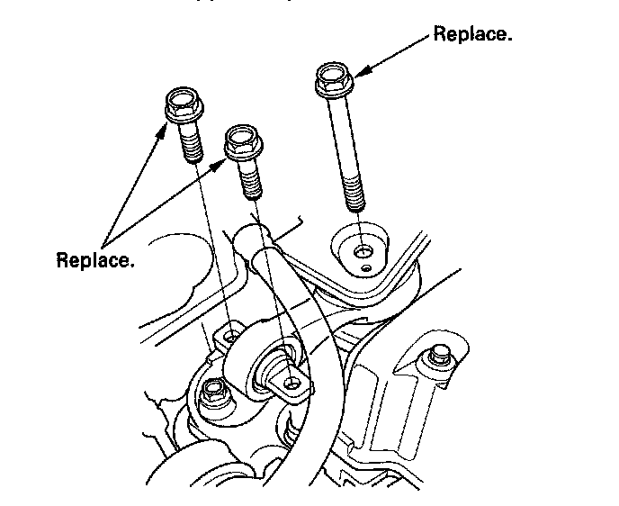
3. Remove the ground cable (A), then remove the side engine mount bracket (B).
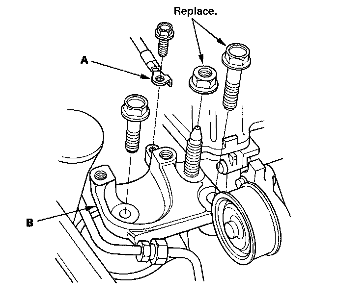
4. Remove the side engine mount stiffener (A), then remove the side engine mount (B).
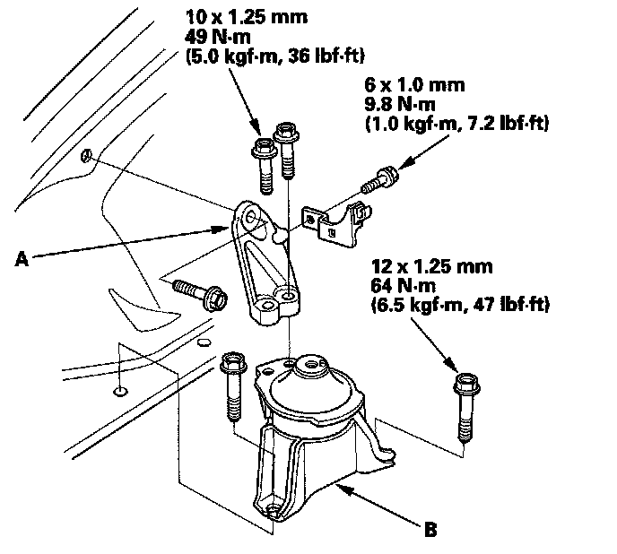
5. Install the side engine mount, then install the side engine mount stiffener.
6. Install the side engine mount bracket (A), then loosely tighten the new bolt and nut (B), and loosely tighten the bolt (C).
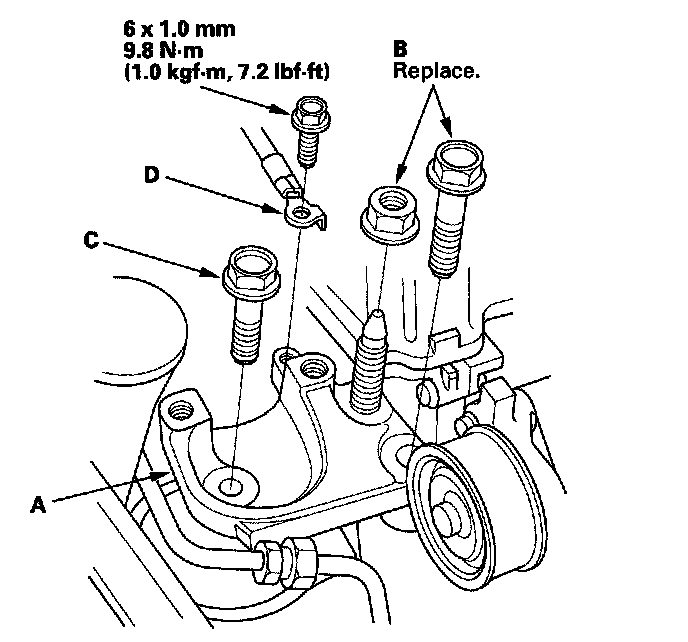
7. Install the ground cable (D).
8. Remove the air cleaner assembly.
9. Loosen the transmission mounting bolt and nuts (A).
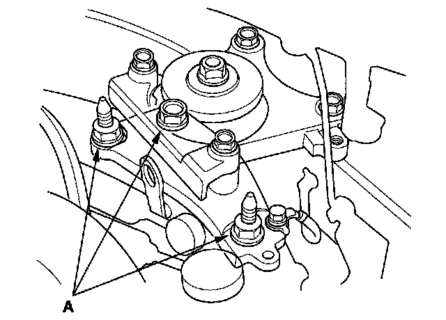
10. Raise the vehicle on the lift to full height.
11. Remove the splash shield.
12. Loosen the lower torque rod mounting bolt (A).
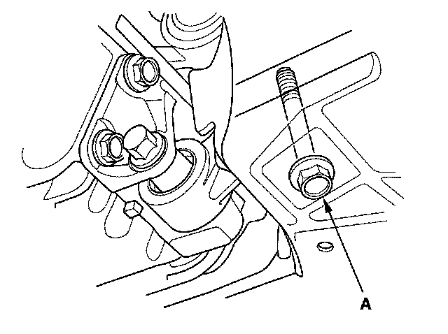
13. Loosen the front mount mounting bolt (A).
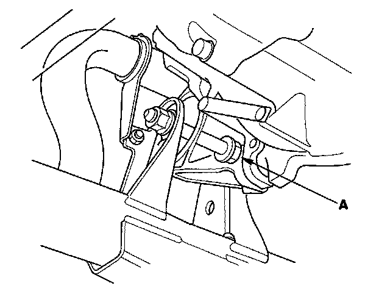
14. Lower the vehicle on the lift.
15. Tighten the side engine mount mounting bolts and nut.
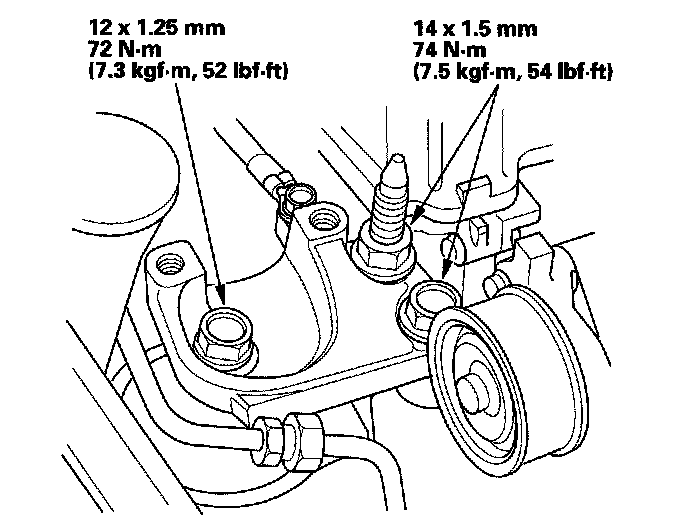
16. Tighten the transmission mounting bolt and nuts.
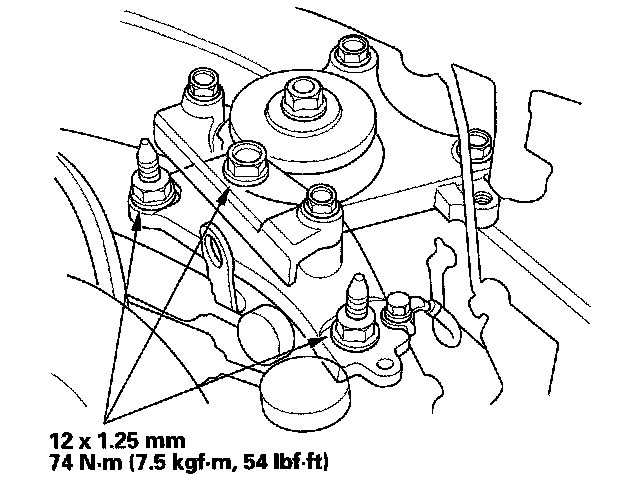
17. Raise the vehicle on the lift to full height.
18. Tighten the lower torque rod mounting bolt.
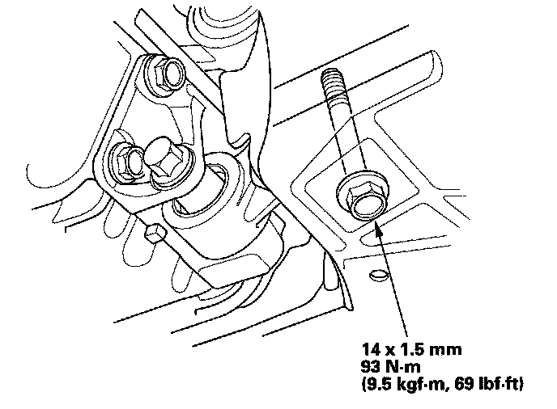
19. Lower the vehicle on the lift.
20. Install the air cleaner assembly.
21. Install the upper torque rod, then tighten the new upper torque rod mounting bolts in the numbered sequence shown.
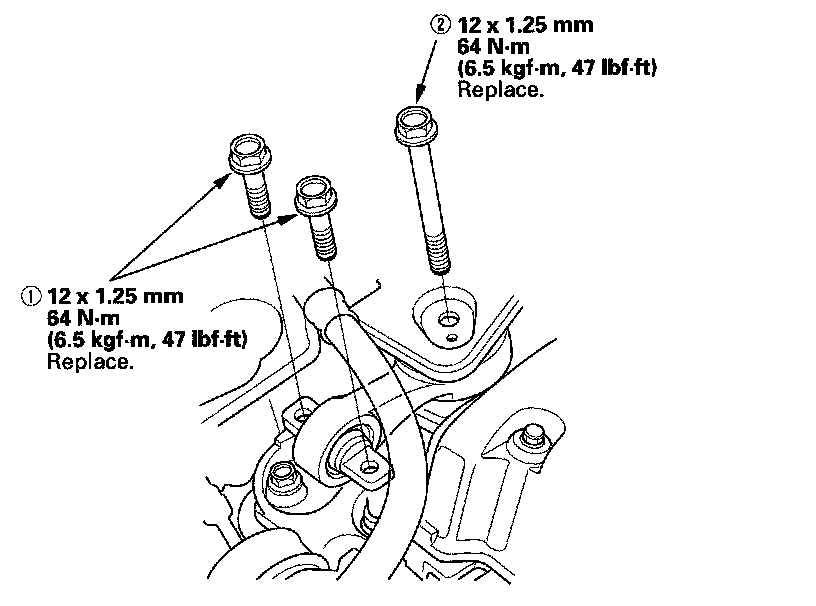
22. Raise the vehicle on the lift to full height, and tighten the front mount mounting bolt.
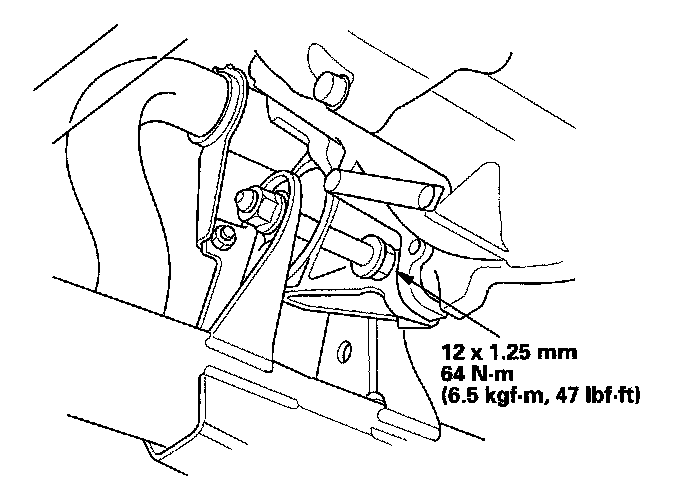
23. Install the splash shield.